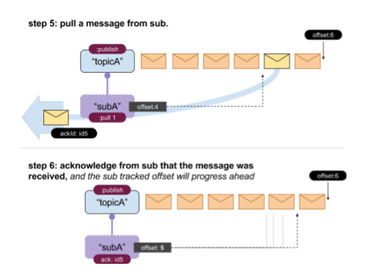

The Messaging API flow
The main steps of the messaging API:
- A user creates a Topic
- Users that want to consume a message set up subscriptions.
- Each subscription is set on one Topic
- A Topic can have multiple Subscriptions
- Each subscription sets up a sync point in time.
- Messages that are published after that sync point can be pull by or push to the subscribers.
- Messages that have been published to the Topic that the Subscription was configured for before the creation of the Subscription, will not be delivered to the Subscribers.
- Each Topic has a TTL values for each messages published to it. Older messages are purged.
- Message deliveries can be out-of-order and might have duplicate messages. Each Subscriber should be idempotent
- A Subscription is configured either as in PULL or on PUSH mode. PUSH mode receives a client URI in order to POST messages there


A Topic might have multiple subscriptions and each subscription has it’s own tracked offset on the topic.
- Above: A single Topic holding multiple Subscriptions